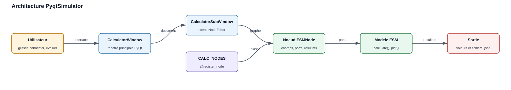
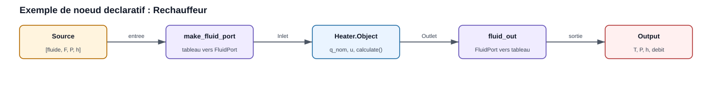
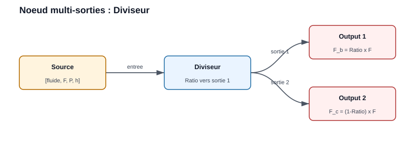
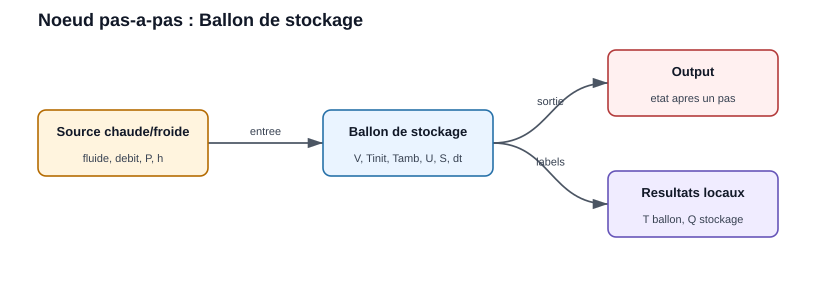
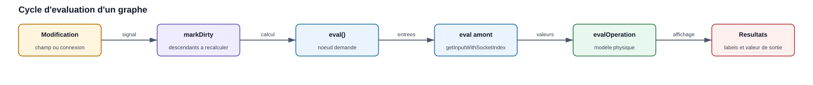

Graphical Interfaces and Visual Tools
EnergySystemModels contient plusieurs briques visuelles for construire, tester et présenter des models energy. Cette page sert de guide de travail : elle explique comment lancer le simulateur PyQt, comment lire un graphe, comment ajouter un nouveau node et comment documenter les results avec les figures réellement produites by la bibliothèque.
Overview
Le simulateur graphique principal est PyqtSimulator. Il s’appuie on le
moteur NodeEditor for manipuler des nodes et des connexions, puis appelle
les models physiques de la bibliothèque : compresseur, échangeur, pompe,
batterie, humidificateur, réchauffeur, etc.

Architecture générale : la fenêtre PyQt héberge une scène NodeEditor, les nodes enregistrés appellent les models EnergySystemModels, puis les valeurs sont affichées ou sauvegardées.
Le principe d’usage est toujours le même :
Lancer l’interface.
Créer une nouvelle scène.
Glisser des nodes from la palette.
Relier les outputs aux inputs.
Renseigner les paramètres.
Évaluer le graphe ou le node de output.
Sauvegarder le projet au format
.json.
Installation and Launch
Les interfaces nécessitent PyQt5. Dans un environnement de développement,
installer aussi la bibliothèque en mode éditable ou ajouter le dossier src
au PYTHONPATH.
pip install -e .
pip install PyQt5
Depuis le dépôt source :
cd A:\OneDrive\_Github_\EnergySystemModels
$env:PYTHONPATH = "$PWD\src"
python -m PyqtSimulator.main
Le script crée une QApplication, applique le style Fusion puis ouvre
CalculatorWindow. La fenêtre contient une zone MDI et une palette de nodes.
Chaque élément de la palette vient du registre CALC_NODES.
PyqtSimulator Interface
La fenêtre principale regroupe les éléments suivants :
NodesPalette latérale. Elle liste les classes enregistrées par
@register_node(...). Un glisser-déposer crée un node in la scène.Zone de travailScène NodeEditor. Les nodes y sont placés, déplacés et connectés.
Menu fichierCréation, ouverture et sauvegarde des graphes. Les projets sont stockés en JSON by le moteur NodeEditor.
Menu contextuelClic droit on un node for l’évaluer, le marquer invalide ou forcer le recalcul de ses descendants. Clic droit on une connexion for choisir le type de courbe.
Node OutputNode d’affichage final. Il déclenche l’évaluation amont et présente le fluid, le flow rate, la pressure, l’enthalpy, la temperature et le flow rate volumique.
Port Convention
Les connexions échangent des listes Python courtes. Cette convention rend les
graphes faciles à sérialiser in les fichiers .json.
Type de flux |
Format échangé |
Unités |
|---|---|---|
Fluid thermodynamique |
|
|
Air humide |
|
|
Les helpers de PyqtSimulator.nodes.esm_node_helpers assurent la conversion
entre ces listes et les objets de la bibliothèque :
make_fluid_port(arr)Convertit
[fluid, F, P, h]to unFluidPort.fluid_out(port)Convertit un
FluidPortde output to la liste standard.make_air_port(arr)etair_out(port)Appliquent la même logique aux ports d’air humide.
Reading a Graph
Pour un graphe simple Source -> Heater -> Output :

Le node source fournit le fluid. Le réchauffeur convertit la liste d’input
en FluidPort, appelle le model Heater.Object puis renvoie une liste
de output compatible with Output.
Example d’usage :
Ajouter un node
Source.Choisir le fluid, by example
WaterouR134a.Définir le flow rate, la temperature et la pressure.
Ajouter un node
Heater.Renseigner
Power nominaleetTaux de charge.Ajouter un node
Output.Relier
SourcetoHeater, puisHeaterversOutput.Évaluer
Output.
Result attendu : Output affiche l’état de output, tandis que le node
Heater affiche directement la power transférée et la temperature
de output.
Graphs with Multiple Outputs
Certains composants possèdent plusieurs outputs physiques. C’est le cas du
Splitter, du Séparateur liq/vap et du Ballon de flash. Dans ces
cas, le node renvoie une liste de valeurs, une by socket de output.

Le Splitter conserve le même fluid, la même pressure et la même
enthalpy on les deux branches. Seul le flow rate est réparti between les deux
outputs according to le ratio saisi.
Example d’usage du Splitter :
Ajouter une
Sourcewith un flow rate de1.0 kg/s.Ajouter un node
Splitter.Régler
Fraction to output 1à0.30.Ajouter deux nodes
Output.Relier la première output du
SplittertoOutput 1.Relier la deuxième output du
SplittertoOutput 2.Évaluer les deux outputs.
Result attendu :
Branche |
Flow rate attendu |
Commentaire |
|---|---|---|
Output 1 |
|
Fraction |
Output 2 |
|
Fraction |
Le routage est assuré by CalcNode.getOutputValue(index). Pour un node à
une seule output, la valeur est directement [fluid, F, P, h]. Pour un node
multiple outputs, la valeur devient [[fluid, F1, P, h], [fluid, F2, P, h]] et
l’index du socket allows choisir la bonne branche.
Storage and Step-by-Step Calculation
Le node Storage tank expose le model MixedStorage. Il estime la
temperature d’un ballon mélangé after un time step, à partir de la
temperature initiale, du volume, du flow rate entrant et des pertes vers
l’ambiance.

Le node reçoit un flux entrant, calcule l’état du ballon after dt puis
renvoie un flux de output dont l’enthalpy correspond à la temperature du
ballon.
Paramètres principaux :
Paramètre |
Signification |
Unité |
|---|---|---|
|
Volume d’eau ou de fluid in le ballon |
m³ |
|
Temperature du ballon au début du time step |
°C |
|
Temperature extérieure for le calcul des pertes |
°C |
|
Coefficient global de pertes thermiques |
W/m²/K |
|
Surface d’échange to l’ambiance |
m² |
|
Durée du calcul élémentaire |
s |
Example d’usage :
Créer une
Sourcewith un fluid compatible CoolProp, by exampleWater.Définir une temperature d’input supérieure à la temperature initiale du ballon for simuler une charge, ou inférieure for simuler une décharge.
Ajouter
Storage tank.Renseigner
Volume,T° initiale,T° ambianteetPas de temps.Ajouter
Outputen output.Évaluer le graphe.
Results affichés localement :
T° ballonTemperature du volume mélangé after le time step.
Power stockagePower moyenne stockée ou restituée during le time step.
Limite importante : in l’interface actuelle, le node crée une nouvelle
instance du model à chaque évaluation. Il représente donc un time step
isolé from T° initiale. Pour simuler une série temporelle complète, il
faut mettre à jour T° initiale between les pas ou utiliser un script Python
qui conserve l’objet MixedStorage between deux appels à calculate().
Evaluation Cycle
Lorsqu’un paramètre est modifié, le node est marqué comme sale et ses descendants doivent être recalculés. L’évaluation d’un node de output remonte le graphe jusqu’aux sources, puis propage les valeurs to l’aval.

Les champs Qt déclenchent onInputChanged. Le node aval demande ensuite
l’évaluation des nodes amont, récupère leurs valeurs et appelle son model
physique.
Les points importants for l’utilisateur sont :
Un node without input connectée devient invalide.
Une saisie numérique invalide doit être corrigée before d’obtenir un result fiable.
Le node
Outputest le meilleur point de contrôle : il force le calcul de toute la chaîne amont.Les unités affichées ne sont pas toujours celles utilisées en interne. Par example, la pressure circule en bar in le graphe mais les models peuvent utiliser le pascal.
Creating a New Node
Pour exposer un model EnergySystemModels in l’interface, utiliser de
préférence la classe ESMNode. Elle évite de réécrire l’interface Qt, la
sérialisation et les labels de results.
Un node déclaratif contient :
op_codeIdentifiant numérique unique in
PyqtSimulator.calc_conf.op_titleNom affiché in la palette.
iconChemin de l’icône affichée in la liste.
INPUTSetOUTPUTSSockets d’input et de output.
Pour un composant simple,
OUTPUTS = [1]suffit. Pour un composant à deux outputs, utiliserOUTPUTS = [1, 1]et retourner une liste de deux ports in le même ordre que les sockets.OUTPUTS = [1, 1] def evalOperation(self, input1, input2): ... self.value = [fluid_out(model.Outlet_b), fluid_out(model.Outlet_c)] return self.value
FIELDSChamps numériques affichés under forme de
QLineEdit.CHOICESListes déroulantes affichées under forme de
QComboBox.RESULTSLabels de output mis à jour by le calcul.
evalOperation(...)Code métier : lecture des inputs, appel du model, affichage des results, retour de la valeur de output.
Real Example: Heater Node
Le node Heater illustre la structure recommandée.
from ThermodynamicCycles.Components import Heater
from ThermodynamicCycles.FluidPort.FluidPort import Fluid_connect
from PyqtSimulator.calc_conf import register_node, OP_NODE_HEATER
from PyqtSimulator.nodes.esm_node_helpers import ESMNode, make_fluid_port, fluid_out
@register_node(OP_NODE_HEATER)
class CalcNode_Heater(ESMNode):
icon = "icons/heating_coil.png"
op_code = OP_NODE_HEATER
op_title = "Réchauffeur"
content_label_objname = "calc_node_heater"
INPUTS = [2]
OUTPUTS = [1]
HEIGHT = 300
FIELDS = [
("q_nom", "Puissance nominale (kW)", 100.0),
("u", "Taux de charge (0-1)", 1.0),
]
RESULTS = [
("q", "Puissance transférée (kW)"),
("to", "T° sortie (°C)"),
]
def evalOperation(self, input1, input2):
a = make_fluid_port(input1)
model = Heater.Object()
Fluid_connect(model.Inlet, a)
model.Q_flow_nominal = self.num("q_nom") * 1000.0
model.u = self.num("u")
model.calculate()
self.show_result("q", "%.3f" % (model.Q_flow / 1000.0))
self.show_result("to", "%.2f" % model.To_degC)
self.value = fluid_out(model.Outlet)
return self.value
Ce model donne une règle générale : les champs affichés en kW ou en bar sont convertis in les unités attendues by le model, puis reconvertis for les ports ou les labels utilisateur.
Registering the Node in the Palette
Ajouter un code unique in
PyqtSimulator.calc_conf.Décorer la classe with
@register_node(OP_NODE_...).Placer le fichier in
PyqtSimulator/nodes.Vérifier que le module est importé. Le fichier
nodes/__init__.pyimporte automatiquement les fichiers.pydu dossier.Relancer
PyqtSimulator. Le node doit apparaître in la palette.
Example de réservation d’opcode :
OP_NODE_HEATER = 280
Development Best Practices
- Utiliser des noms de champs explicites
Le libellé doit contenir l’unité :
Power nominale (kW),Pressure output (bar),Rendement (-).- Limiter la logique Qt in les nodes
Pour les nouveaux models, préférer
ESMNodeet garder le code métier dansevalOperation.- Valider les unités à chaque conversion
Les ports internes des models utilisent souvent le pascal et le joule par kilogramme. Les graphes utilisent plutôt le bar et le kJ/kg.
- Afficher les results utiles localement
Un node de composant peut afficher ses indicateurs propres : power, rendement, temperature de output, humidité relative, COP, perte de charge.
- Tester with un graphe minimal
Avant d’intégrer un composant complexe, tester
Source -> composant -> Output. Ajouter ensuite les branches multiples.- Documenter le comportement
Chaque nouveau node important doit avoir un example in la documentation : diagram du graphe, paramètres, results attendus, limites et figure si une method
plot()existe.
Results and Figures in the Documentation
La documentation doit distinguer trois types de visuels :
Diagram de grapheFigure pédagogique montrant les nodes et les connexions. Ces diagrams sont générés from
docs/source/diagrams/*.jsonpardocs/generate_diagrams.py.Table de resultsValeurs numériques issues d’un example reproductible. Les unités doivent être visibles in l’en-tête ou in la première colonne.
Plot du modelFigure produite by une method réelle de la bibliothèque : by example
ch.plot(),calc.plot()oucalc.plot_detail(). Il ne faut pas remplacer ces methods by un tracé manuel arbitraire lorsque le model fournit déjà sa propre fonction de visualisation.
Workflow recommandé for une page d’example :
Décrire le cas étudié et les hypothèses.
Afficher le diagram des nodes connectés.
Donner le code minimal reproductible.
Afficher les results in une table.
Afficher les plots réellement générés by les fonctions du model.
Ajouter une courte interprétation métier.
Generating Diagrams and Plots
Depuis le dépôt EnergySystemModels-fr :
cd A:\OneDrive\_Github_\EnergySystemModels-fr
python docs\generate_diagrams.py
Pour les plots réellement exposés by les models :
cd A:\OneDrive\_Github_\EnergySystemModels-fr
$env:PYTHONPATH = "A:\OneDrive\_Github_\EnergySystemModels\src"
$env:PYTHONIOENCODING = "utf-8"
python docs\generate_model_plots.py
Le fichier generate_model_plots.py doit rester strict : il appelle les
methods de plot de la bibliothèque et sauvegarde les figures dans
docs/source/images. Les figures de remplacement ne sont acceptables que
pour les examples without method graphique déterministe, et elles doivent être
signalées comme telles in le script.
Building the Documentation
cd A:\OneDrive\_Github_\EnergySystemModels-fr
python -m sphinx -b html docs\source docs\_build\html
Ouvrir ensuite docs\_build\html\gui_tools.html for vérifier la mise en
forme. Contrôler en particulier :
Les chemins
.. figure:: images/....Les unités in les tableaux.
La lisibilité des diagrams on une largeur réduite.
La présence des plots lorsque l’example appelle une method
plot.
Troubleshooting
ModuleNotFoundError: PyqtSimulatorAjouter
EnergySystemModels/srcauPYTHONPATHou installer le paquet en mode éditable.QApplicationouPyQt5introuvableInstaller
PyQt5in l’environnement actif.CoolPropintrouvableInstaller les dépendances scientifiques utilisées by les composants thermodynamiques.
- Un node n’apparaît pas in la palette
Vérifier l’opcode, le décorateur
@register_node, le nom du fichier dansPyqtSimulator/nodeset les erreurs d’import au démarrage.- Un result ne se met pas à jour
Vérifier que les champs sont connectés à
onInputChanged. AvecESMNode, cette connexion est automatique forFIELDSetCHOICES.- Une connexion est refusée
Le moteur empêche de relier deux inputs, deux outputs ou un node à lui-même. Repartir de la output du node amont to l’input du node aval.
- Un plot manque in ReadTheDocs
Vérifier que la figure est générée in
docs/source/imagesbefore le build et que le document référence exactement le bon nom de fichier.
Checklist for Finalizing an Example
Avant de considérer une page comme complète :
Le scénario est compréhensible without lire le code source.
Les nodes et connexions sont diagramtisés.
Les paramètres d’input sont listés with unités.
Les results sont affichés in une table lisible.
Les plots existants du model sont affichés.
Les limites de validité sont indiquées.
Le code est reproductible from un environnement propre.
Le build Sphinx passe without erreur liée à la page.